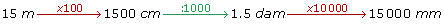
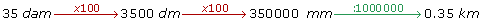

Medidas de longitud
Medidas de longitud
La unidad principal para medir longitudes es el metro.
Existen otras unidades para medir cantidades mayores y menores, las más usuales son:
| Unidad | Abreviatura | Equivalencia |
|---|---|---|
| Kilómetro | Km | 1 000 m |
| Hectómetro | hm | 100 m |
| Decámetro | dam | 10 m |
| Metro | m | 1 m |
| Decímetro | dm | 0.1 m |
| Centímetro | cm | 0.01 m |
| Milímetro | mm | 0.001 m |
Observamos que desde los submúltiplos, en la parte inferior, hasta los múltiplos, en la parte superior, cada unidad vale 10 veces más que la anterior.
Por lo tanto, el problema de convertir unas unidades en otras se reduce a multiplicar o dividir por la unidad seguida de tantos ceros como lugares haya entre ellas.


Ejemplos de conversión de medidas
1 Pasar 50 metros a centímetros:
Si queremos pasar de metros a centímetros tenemos que multiplicar (porque vamos a pasar de una unidad mayor a otra menor) por la unidad seguida de dos ceros, ya que entre el metro y el centímetro hay dos lugares de separación.
50 · 100 = 5 000 cm
2 Pasar 4 385 milímetros a metros:
Para pasar de milímetros a metros tenemos que dividir (porque vamos a pasar de una unidad menor a otra mayor) por la unidad seguida de tres ceros, ya que hay tres lugares de separación.
4 385 : 1000 = 4.385 m
3 Expresar en metros:
5 km 5 hm 7 dam  5 000 m + 500 m + 70 m = 5 570 m
5 000 m + 500 m + 70 m = 5 570 m
3 m 2 cm 3 mm 3 m + 0.02 m + 0.003 m = 3.023 m
3 m + 0.02 m + 0.003 m = 3.023 m
25.56 dam + 526.9 dm 255.6 m + 52.69 m = 308.29 m
255.6 m + 52.69 m = 308.29 m
53 600 mm + 9 830 cm 53.6 m + 98.3 m = 151.9 m
53.6 m + 98.3 m = 151.9 m
1.83 hm + 9.7 dam + 3 700 cm 183 m + 97 m + 37 m = 317 m
183 m + 97 m + 37 m = 317 m
Otras medidas de longitud
1 Para medir distancias grandes
Para medir distancias muy grandes, sobre todo en astronomía, se utilizan las siguientes medidas: (Haga click sobre cada una de las pestañas para ver sus propiedades)
- 1. Unidad astronómica
- 2. El año-luz
- 3. El pársec
1. Unidad astronómica
Una unidad astronómica es la distancia media Tierra−Sol. Se utiliza en la medición de órbitas y trayectorias dentro del Sistema Solar.
2. El año-luz
Es igual a la distancia recorrida por la luz en un año solar medio. Se emplea en astronomía para medir grandes distancias.
3. El pársec
Unidad de medida astronómica correspondiente a la distancia que habría a una estrella que tuviera una paralaje de un segundo.
 >' title="Siguiente">
>' title="Siguiente">
2 Para medir distancias microscópicas
Para medir distancias muy pequeñas se utilizan las siguientes medidas: (Haga click sobre cada una de las pestañas para ver sus propiedades)
- 1. Micra o micrómetro
- 2. Nanómetro
- 3. Ángstrom
1. La micra o micrómetro
Equivale a una millonésima parte de un metro.
2. El nanómetro
Utilizado para medir la radiación ultravioleta, radiación infrarroja y la luz. Recientemente la unidad ha cobrado notoriedad en el estudio de la nanotecnología, área que estudia materiales que poseen dimensiones de unos pocos nanómetros.
Equivale a una mil millonésima parte de un metro.
3. El ángstrom
Es la unidad empleada principalmente para expresar longitudes de onda, distancias moleculares y atómicas.
Equivale a una diezmil millonésima parte de un metro.
>" title="Siguiente">